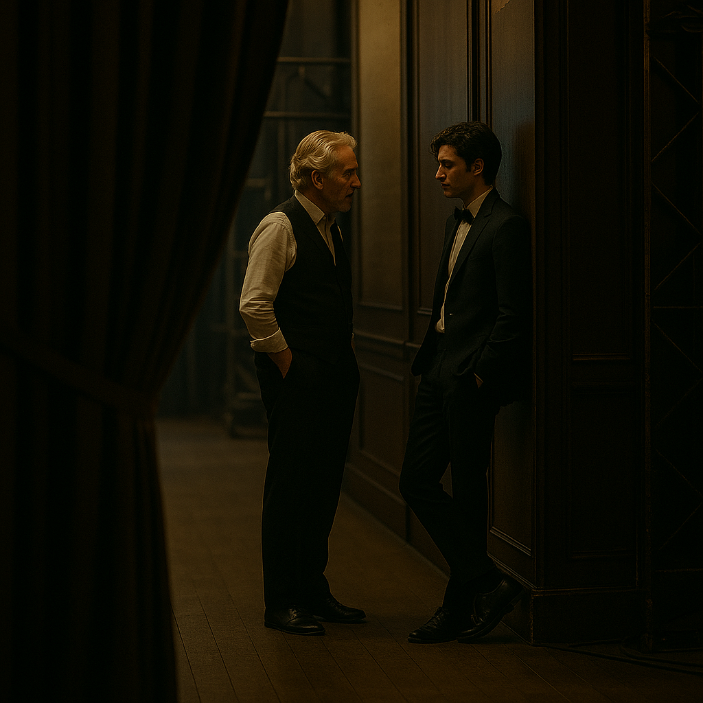

Страница 1
Мне было лет шесть, когда папа впервые повёл меня в «Гранд Лирику». Мы пришли вдвоём — только я и он, в тот осенний, чуть дождливый вечер. Я тогда не знала, что именно в этот день влюблюсь в балет навсегда.
У входа нас встретил директор театра — высокий, строгий мужчина с каменным лицом. Он пожал папе руку и едва взглянул на меня. Меня охватила дрожь — только от одного его взгляда…
Когда мы сели в зал и занавес поднялся, я замерла. На сцене исполняли знаменитый танец «Белые лебеди». Моё сердце билось так сильно...
Через неделю мы пришли уже втроём — с мамой. Я была в своём первом розовом платье и держала маму за руку, пока она разговаривала с каким-то странным мужчиной. Он смотрел на нас с каким-то странным выражением. Почти с презрением — особенно на папу. Но думаю, он просто всегда такой. Речь про Людвига. Позже, когда я уже сама вышла на сцену и стала балериной, он всё равно оставался тем же серьёзным мужчиной. Но очень целеустремлённым. И в глубине души, думаю, добрым.
Папа тогда ещё работал в «Моде Вирель». Он много ездил, но в тот вечер был рядом. И именно он сказал:
«Если ты действительно этого хочешь — ты станешь лебедем».
И я захотела.
И стала.
Страница 2
Я нашла старую распечатку смены охраны и записи камер...
(текст страницы 2)
Страница 3
Когда мне было восемнадцать, я встречалась с Виктором — капитаном футбольной команды Virelle City FC. Он был харизматичным, уверенным, и я, конечно же, была влюблена. Сначала всё действительно было похоже на сказку: букеты цветов после репетиций, прогулки под дождём, аплодисменты с трибун, когда он, ловко забив мяч, кидал взгляд прямо на меня.
Но со временем он стал чаще улыбаться другим девушкам, а потом — перестал скрывать это вовсе. Мы ужасно поссорились после того, как я увидела его… целующимся с одной из них за углом концертного зала. Я тогда ушла, не оборачиваясь.
Спустя пару дней я зашла в книжную лавку неподалёку от «Гранд Лирики» — просто чтобы отвлечься. Там я и встретила Неда. Он тщательно выбирал книжку. Посмотрел на меня — и улыбнулся. Как будто знал меня всю жизнь.
Мы разговорились. Мои волосы были растрёпаны после репетиции, а на плече висел рюкзак, из которого торчала пуанта. Он это заметил, улыбнулся шире и подарил мне книжку про балет. Я сразу забыла о Викторе — и влюбилась в Неда.
Сейчас Виктор то и дело пытается снова приблизиться. Это, честно говоря, раздражает и Оливию, и меня. Но мне всё равно — я нашла своего человека. Неда.
Он любит часами рассказывать мне о квантовой физике, а я ничего не понимаю. Но мне и не нужно — я просто люблю, когда он читает мне вслух, пока я лежу с ногами на его коленях и поправляю пуанты.
Мы обручились. Скоро наша свадьба.
Жду с нетерпением!
Страница 4
Десять лет с тех пор, как не стало папы. Тогда полиция быстро закрыла дело, назвав всё несчастным случаем. Но я не верю.
Я. Не. Верю!
Я решила сама раскрыть эту тайну.
Я знаю одно: его тело нашли у заднего входа в оперу. Это было слишком странно. Слишком удобно.
Папа тогда работал в Мода Вирель, и компания переживала жёсткую конкуренцию. В те месяцы они начали выпуск нового продукта — спешно, без нужных лицензий.
Папа знал об этом. Слишком многое знал.
Теперь я пытаюсь понять, что произошло на самом деле.
Потому что чувствую — это не было просто совпадением.
Страница 5
Сегодня после репетиции я забыла в зале бутылку воды и вернулась, когда все уже разошлись. Я была уверена, что в театре больше никого нет.
И вдруг — услышала голоса.
Это были директор и Людвиг. Они стояли у служебного выхода и говорили негромко, но отчётливо. Я остановилась за кулисами, чтобы не мешать… но услышала фразу, от которой по спине пробежали мурашки.
— Эти деньги уже должны были прийти, — говорил Людвиг. — Мода Вирель обещала всё перевести на этой неделе.
— Если не переведут, — усмехнулся директор, — я сдам их самого в полицию. Мне-то деньги нужны.
Он, кажется, пошутил. Но в его голосе не было ни капли веселья.
Я вышла так, чтобы они меня не заметили. Сердце колотилось.
Кажется, один из самых важных кусочков пазла только что встал на место…
